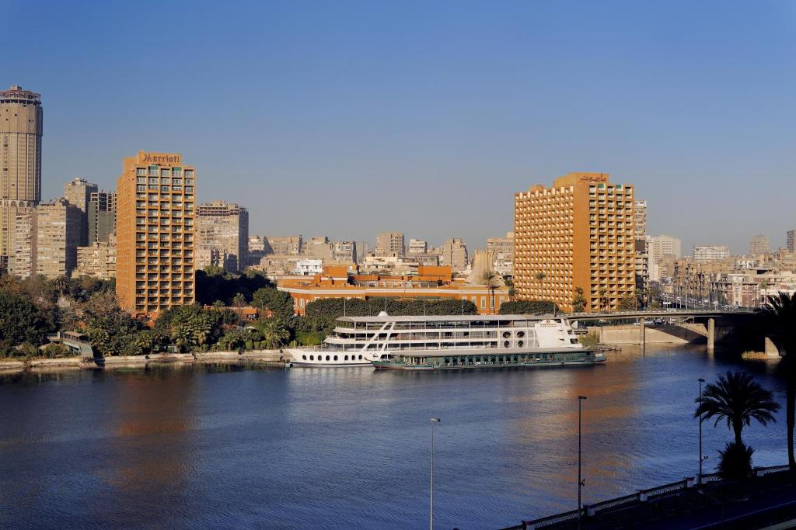
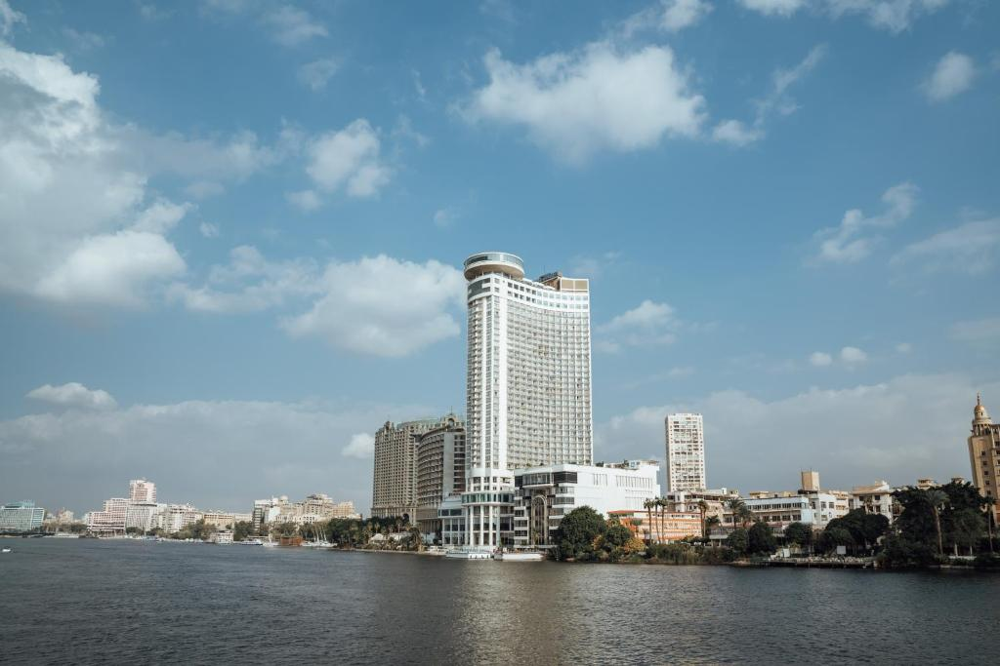
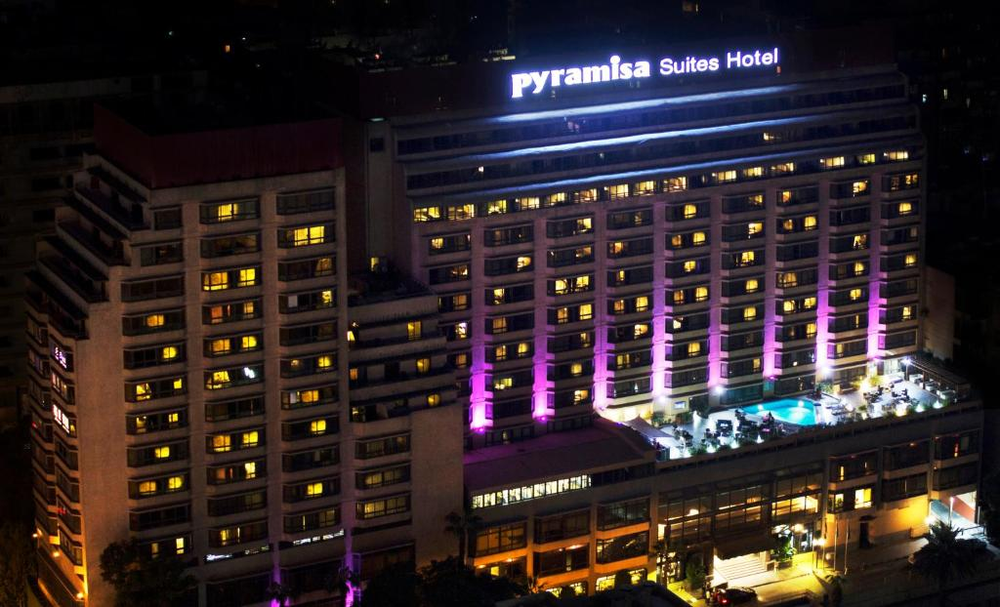
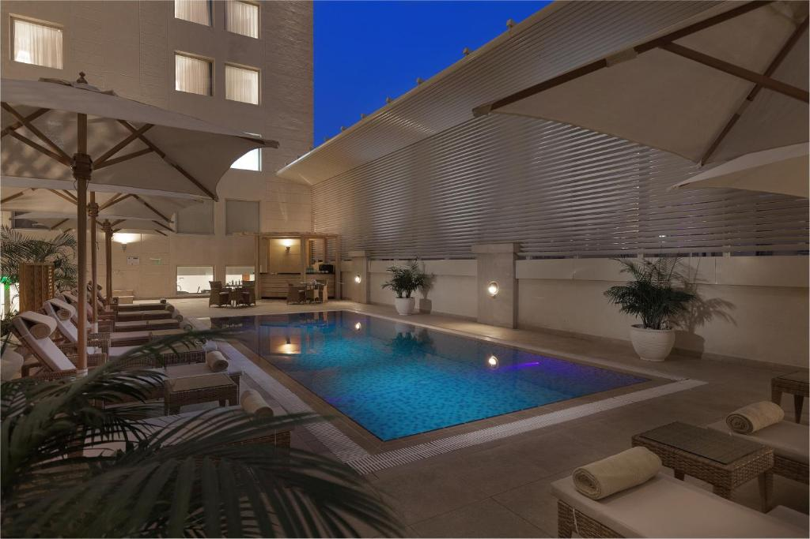
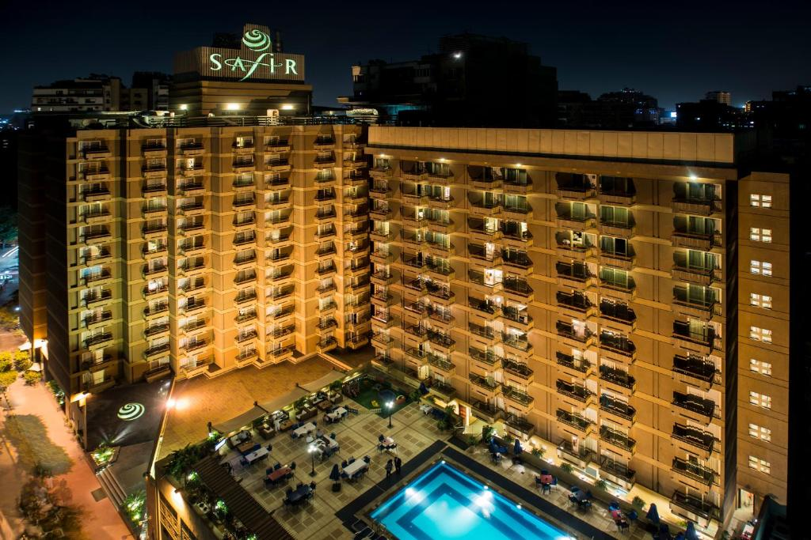
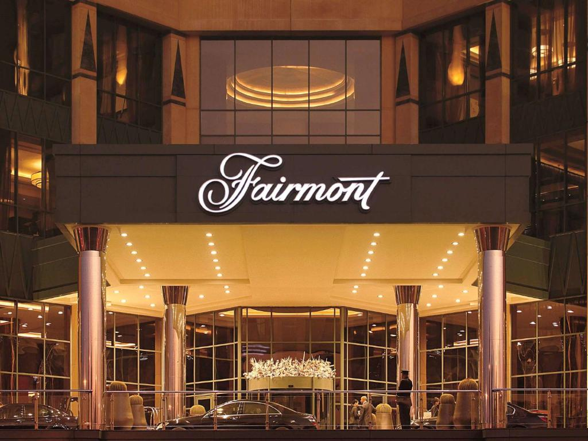

| funduq yaqae funduq mariwt alqahirat wakazinu eumar alkhiam fi mintaqat jazirat alzamalik fi alqahirat , ghrfaan , shurfatan fakhirat , tutilu ealaa nahr alniyl 'aw alhadayiq , kama yadumu muntajae wa'akthar min 15 mtemaan wbaraan , fi alqahirat , altaw'am , funduq tawil , bi'iitlalat banuramiat ealaa nahr alniyl walhadayiq alkhasat albalighat misahatuha 24281.13 mitr murabae |  | Grand Nile Tower Guests can enjoy views of the Nile from the revolving restaurant, which serves international cuisine. Japanese, Indian and Italian cuisines are also available. Live entertainment is organized regularly on the hotel's yacht. |  |
| Pyramisa Suites Hotel offers guests the opportunity to choose between 4 restaurants serving food ranging from classic Egyptian and Italian cuisine to Indian and Chinese specialties. It also has an international buffet restaurant. |  | Located in Cairo in the Cairo Governorate Region, 200 meters from The Egyptian Museum, Steigenberger Hotel El Tahrir features an outdoor pool and sauna. Guests can enjoy the on-site restaurant. Free WiFi is available throughout the property and private parking is available on site |  |
| Located in Cairo, a 10-minute walk from Bridge of the Nile, Safir Hotel offers luxurious rooms with balconies. It has an outdoor pool, gym and free Wi-Fi in public areas. |  | Located in the Nile City Towers by the River Nile, this 5-star hotel features a rooftop pool deck with stunning views across Cairo to the Pyramids. It offers 7 places to eat and drink. |  |